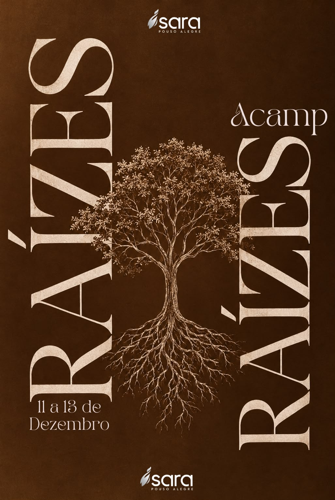
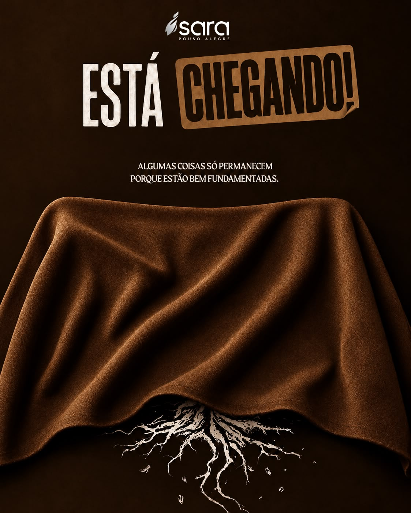

01 / PRIMEIRO LOTEABERTO
Até 15 de novembro
R$120,00
no PIX ou dinheiro
ou R$ 140,00 no crédito
em até 4x de R$ 35,00
Escolher este lote ↗em até 4x de R$ 35,00

O crescimento começa onde ninguém vê.
Três dias para aprofundar sua fé, fortalecer sua identidade e crescer na presença de Deus.
Quero viver esse encontro ↗1º lote até 15 de novembro · a partir de R$ 120
Algumas coisas só permanecem porque estão bem fundamentadas.
Raízes é um convite para cuidar do que sustenta a nossa caminhada com Cristo. Vamos trabalhar princípios que ninguém vê, mas que transformam quem somos e como vivemos.
“Como, pois, recebestes o Senhor Jesus Cristo, assim também andai nele, arraigados e edificados nele, e confirmados na fé...”COLOSSENSES 2:6–7
Programe-se, garanta o melhor valor
e venha criar raízes com a gente.
Até 15 de novembro
R$120,00
no PIX ou dinheiro
Até 30 de novembro
R$150,00
no PIX ou dinheiro
Após o encerramento do 1º lote
Até 06 de dezembro
R$200,00
no PIX ou dinheiro
Após o encerramento do 2º lote
Valores por pessoa. A inscrição será confirmada pela organização após a conferência do pagamento.
Preencha seus dados para solicitar sua inscrição no Acampamento Raízes.

O QUE ESTÁ FIRMADO EM CRISTO PERMANECE.